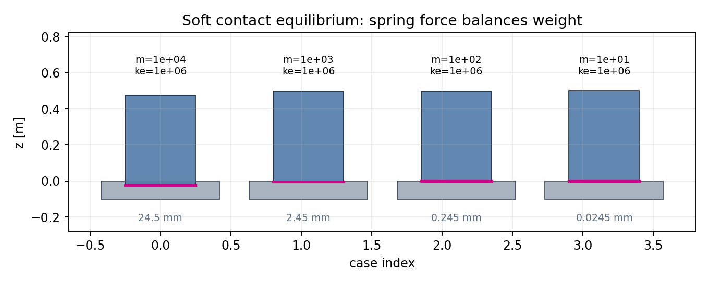
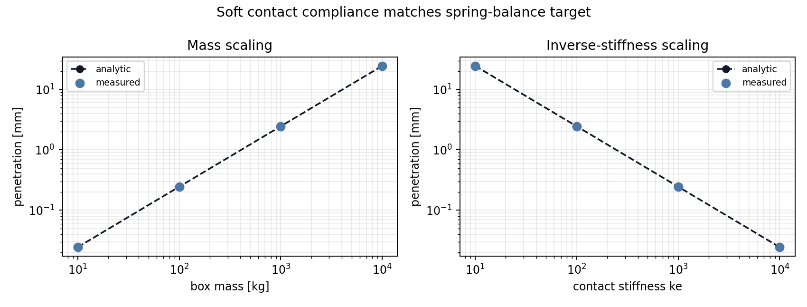
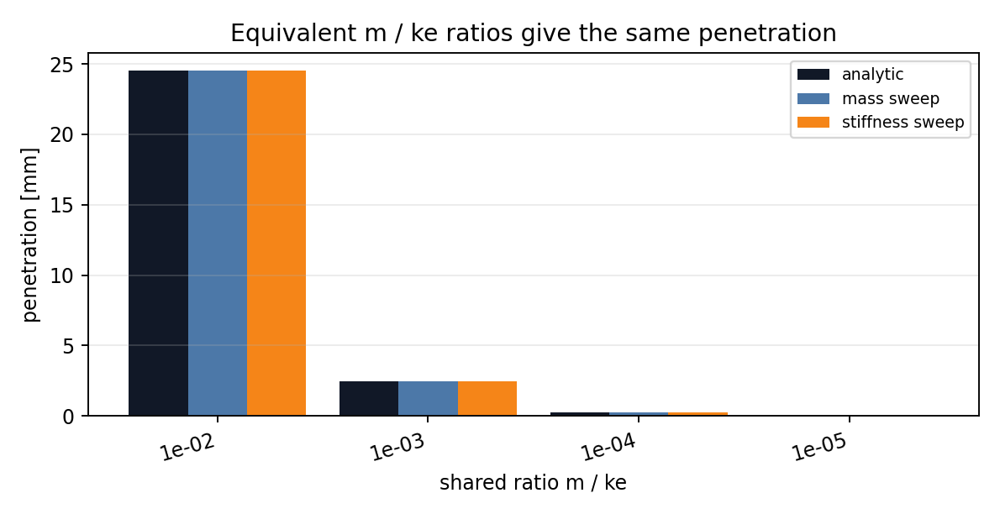

Setup
Each box rests on a fixed support with friction and damping disabled.
The analytic target is penetration = m g / (4 ke), using
four box-support contact points.
The validation starts at this analytic equilibrium. That makes the report a clean compliance check rather than a settling or damping test.

Equilibrium Close-Up
This video is a visual sanity check, not the quantitative result. The scene starts at the analytic equilibrium, so the boxes should stay still: each box bottom should remain aligned with its magenta target line. The plots below carry the full mass and stiffness comparison.
Result
ke, penetration is linear in mass.1 / ke.0.00942%.Analytic Scaling

Ratio Equivalence
Soft-contact penetration depends on m / ke. A heavier box
with proportionally higher stiffness should land at the same penetration
as a lighter box with proportionally lower stiffness.

m / ke produce the same depth.